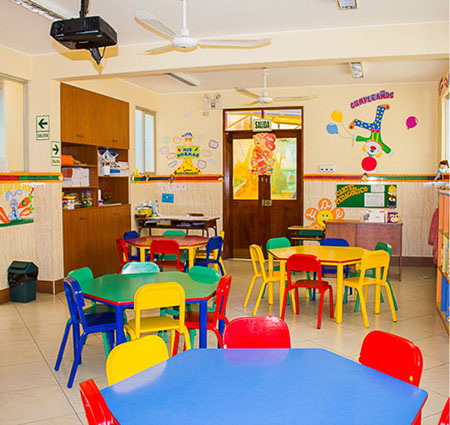
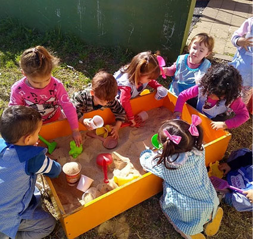
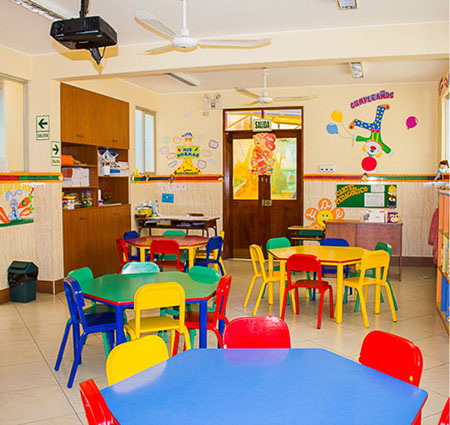
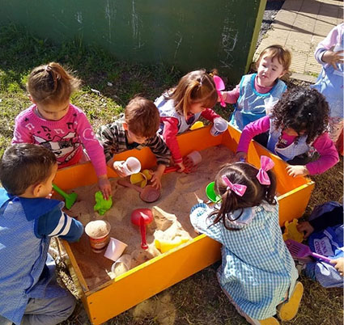

Jardín Maternal
Salas de lactantes, deambuladores y 2 años.
Espacios cuidados para favorecer el desarrollo emocional y motriz desde los primeros meses.


Cada niño está en capacidad para alcanzar su autenticidad. Se promueven acordes a sus necesidades y desafíos que guían con sensibilidad y compromiso.
Salas de lactantes, deambuladores y 2 años.
Espacios cuidados para favorecer el desarrollo emocional y motriz desde los primeros meses.
Salas de 3, 4 y 5 años.
Generamos e incentivamos actividades que integran el juego, lenguaje, pensamiento y creatividad.
Enfocadas en prepararlos para la siguiente etapa escolar.
 



Preparan recetas simples mientras aprenden hábitos saludables y trabajo en equipo.
Escuchan cuentos y participan de juegos literarios que fortalecen el lenguaje y la comprensión.
Exploran sonidos, ritmos e instrumentos, desarrollando la expresión y creatividad.

Pintan, dibujan y modelan libremente para expresarse creativamente y estimular la imaginación.